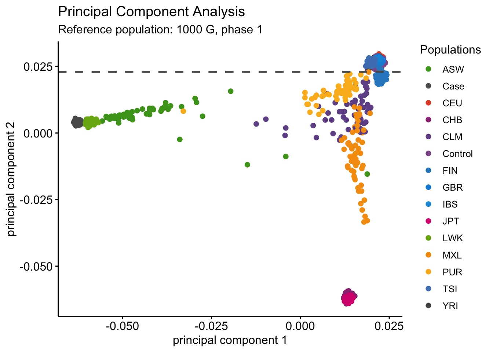
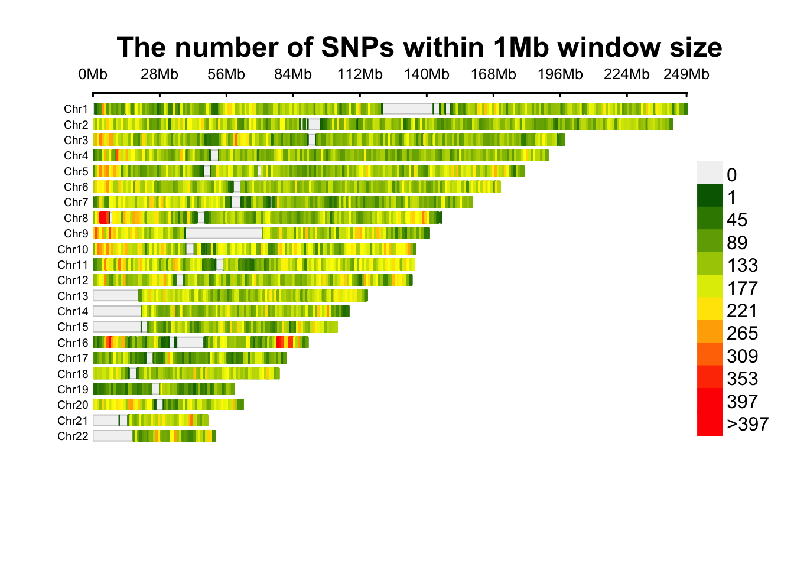
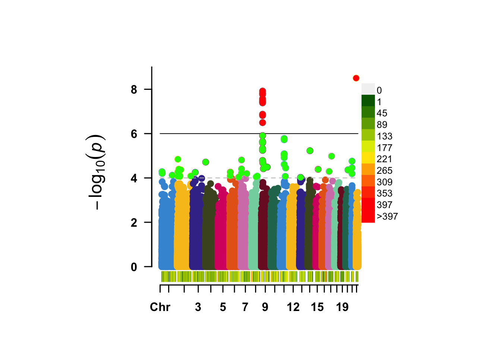

Chapter 9 WTCCC1: a GWAS on coronary artery disease (CAD)
As usual, we start by exploring the data in hand.
plink --bfile wtccc1/CADn1871_500Kb37fwd --bmerge wtccc1/UKBSn1397_500Kb37fwd --make-bed --out wtccc1/wtccc1 && \
plink --bfile wtccc1/wtccc1 --freq --out wtccc1/wtccc1 && \
plink --bfile wtccc1/wtccc1 --hardy --out wtccc1/wtccc1 && \
plink --bfile wtccc1/wtccc1 --missing --out wtccc1/wtccc1 && \
plink --bfile wtccc1/wtccc1 --test-missing --out wtccc1/wtccc1
cat wtccc1/wtccc1.missing | awk '$5 < 0.00001' | awk '{ print $2 }' > wtccc1/wtccc1-fail-diffmiss-qc.txtwtccc1_HWE <- data.table::fread(paste0(COURSE_loc, "/wtccc1/wtccc1.hwe"))
wtccc1_FRQ <- data.table::fread(paste0(COURSE_loc, "/wtccc1/wtccc1.frq"))
wtccc1_IMISS <- data.table::fread(paste0(COURSE_loc, "/wtccc1/wtccc1.imiss"))
wtccc1_LMISS <- data.table::fread(paste0(COURSE_loc, "/wtccc1/wtccc1.lmiss"))
wtccc1_HWE$logP <- -log10(wtccc1_HWE$P)ggpubr::gghistogram(wtccc1_HWE, x = "logP",
add = "mean",
add.params = list(color = "#595A5C", linetype = "dashed", size = 1),
rug = TRUE,
# color = "#1290D9", fill = "#1290D9",
color = "TEST", fill = "TEST",
palette = "lancet",
facet.by = "TEST",
bins = 50,
xlab = "HWE -log10(P)") +
geom_vline(xintercept = 5, linetype = "dashed",
color = "#E55738", size = 1)
ggpubr::gghistogram(wtccc1_FRQ, x = "MAF",
add = "mean", add.params = list(color = "#595A5C", linetype = "dashed", size = 1),
rug = TRUE,
color = "#1290D9", fill = "#1290D9",
xlab = "minor allele frequency") +
geom_vline(xintercept = 0.05, linetype = "dashed",
color = "#E55738", size = 1)## Warning: Using `bins = 30` by default. Pick better value with the argument
## `bins`.## Warning: geom_vline(): Ignoring `mapping` because `xintercept` was provided.## Warning: geom_vline(): Ignoring `data` because `xintercept` was provided.
wtccc1_IMISS$callrate <- 1 - wtccc1_IMISS$F_MISS
ggpubr::gghistogram(wtccc1_IMISS, x = "callrate",
add = "mean", add.params = list(color = "#595A5C", linetype = "dashed", size = 1),
rug = TRUE, bins = 50,
color = "#1290D9", fill = "#1290D9",
xlab = "per sample call rate") +
geom_vline(xintercept = 0.95, linetype = "dashed",
color = "#E55738", size = 1)## Warning: geom_vline(): Ignoring `mapping` because `xintercept` was provided.## Warning: geom_vline(): Ignoring `data` because `xintercept` was provided.
wtccc1_LMISS$callrate <- 1 - wtccc1_LMISS$F_MISS
ggpubr::gghistogram(wtccc1_LMISS, x = "callrate",
add = "mean", add.params = list(color = "#595A5C", linetype = "dashed", size = 1),
rug = TRUE, bins = 50,
color = "#1290D9", fill = "#1290D9",
xlab = "per SNP call rate") +
geom_vline(xintercept = 0.95, linetype = "dashed",
color = "#E55738", size = 1)## Warning: geom_vline(): Ignoring `mapping` because `xintercept` was provided.## Warning: geom_vline(): Ignoring `data` because `xintercept` was provided.
9.1 Quality control
Now that we have handle on the data, we can filter it.
Do you have any thoughts on that? Do you agree with the filters I set below? How would you do it differently and why?
plink --bfile wtccc1/wtccc1 --exclude wtccc1/wtccc1-fail-diffmiss-qc.txt --maf 0.01 --geno 0.05 --hwe 0.00001 --make-bed --out wtccc1/wtccc1_clean9.2 Ancestral background
If these individuals are all from the United Kingdom, we are certain there will be admixture from other populations given UK’s history. Let’s project the WTCCC1 data on 1000G phase 1 populations.
9.2.1 Extreme cleaning
For PCA we need to perform extreme clean.
plink --bfile wtccc1/wtccc1_clean --maf 0.1 --geno 0.1 --indep-pairwise 100 50 0.2 --exclude rawdata/exclude_problematic_range.txt --make-bed --out wtccc1/wtccc1_temp
plink --bfile wtccc1/wtccc1_temp --exclude wtccc1/wtccc1_temp.prune.out --make-bed --out wtccc1/wtccc1_extrclean
rm -v wtccc1/wtccc1_temp*
cat wtccc1/wtccc1_extrclean.bim | awk '{ print $2 }' > wtccc1/wtccc1_extrclean.variants.txt
cat wtccc1/wtccc1.bim | grep "rs" > wtccc1/all.variants.txt
plink --bfile reference/1kg_phase1_all/1kg_phase1_all --extract wtccc1/all.variants.txt --make-bed --out reference/1kg_phase1_all/1kg_phase1_wtccc1
cat reference/1kg_phase1_all/1kg_phase1_wtccc1.bim | \
awk '($5 == "A" && $6 == "T") || ($5 == "T" && $6 == "A") || ($5 == "C" && $6 == "G") || ($5 == "G" && $6 == "C")' | awk '{ print $2, $1, $4, $3, $5, $6 }' \
> reference/1kg_phase1_all/all.1kg_wtccc1.atcg.variants.txt
plink --bfile reference/1kg_phase1_all/1kg_phase1_wtccc1 --exclude reference/1kg_phase1_all/all.1kg_wtccc1.atcg.variants.txt --make-bed --out reference/1kg_phase1_all/1kg_phase1_wtccc1_no_atcg
plink --bfile reference/1kg_phase1_all/1kg_phase1_wtccc1_no_atcg --extract wtccc1/wtccc1_extrclean.variants.txt --make-bed --out reference/1kg_phase1_all/1kg_phase1_raw_no_atcg_wtccc1
plink --bfile wtccc1/wtccc1_extrclean --bmerge reference/1kg_phase1_all/1kg_phase1_raw_no_atcg_wtccc1 --maf 0.1 --geno 0.1 --exclude rawdata/exclude_problematic_range.txt --make-bed --out wtccc1/wtccc1_extrclean_1kgcp -v wtccc1/wtccc1_extrclean_1kg.bim wtccc1/wtccc1_extrclean_1kg.pedsnp
cp -v wtccc1/wtccc1_extrclean_1kg.fam wtccc1/wtccc1_extrclean_1kg.pedindNow that the cleaning is done, we can execute the actual PCA.
perl ~/git/EIG/bin/smartpca.perl \
-i wtccc1/wtccc1_extrclean_1kg.bed \
-a wtccc1/wtccc1_extrclean_1kg.pedsnp \
-b wtccc1/wtccc1_extrclean_1kg.pedind \
-k 10 \
-o wtccc1/wtccc1_extrclean_1kg.pca \
-p wtccc1/wtccc1_extrclean_1kg.plot \
-e wtccc1/wtccc1_extrclean_1kg.eval \
-l wtccc1/wtccc1_extrclean_1kg.log \
-m 5 \
-t 10 \
-s 6.0 \
-w reference/1kg_phase1_all/1kg-pca-populations.txtAnd we should visualize the PCA results: are these individuals really all from European (UK) ancestry?
PCA_WTCCC1_1kG <- data.table::fread(paste0(COURSE_loc,"/wtccc1/wtccc1_extrclean_1kg.pca.evec"), header = FALSE, skip = 1)
# Population Description Super population Code Counts
# ASW African Ancestry in Southwest US AFR 4 #49A01D
# CEU Utah residents with Northern and Western European ancestry EUR 7 #E55738
# CHB Han Chinese in Bejing, China EAS 8 #9A3480
# CHS Southern Han Chinese, China EAS 9 #705296
# CLM Colombian in Medellin, Colombia MR 10 #8D5B9A
# FIN Finnish in Finland EUR 12 #2F8BC9
# GBR British in England and Scotland EUR 13 #1290D9
# IBS Iberian populations in Spain EUR 16 #1396D8
# JPT Japanese in Tokyo, Japan EAS 18 #D5267B
# LWK Luhya in Webuye, Kenya AFR 20 #78B113
# MXL Mexican Ancestry in Los Angeles, California AMR 22 #F59D10
# PUR Puerto Rican in Puerto Rico AMR 25 #FBB820
# TSI Toscani in Italy EUR 27 #4C81BF
# YRI Yoruba in Ibadan, Nigeria AFR 28 #C5D220
PCA_WTCCC1_1kG$V12[PCA_WTCCC1_1kG$V12 == "2"] <- "CAD"
PCA_WTCCC1_1kG$V12[PCA_WTCCC1_1kG$V12 == "1"] <- "UKBS"
PCA_WTCCC1_1kG$V12[PCA_WTCCC1_1kG$V12 == "4"] <- "ASW"
PCA_WTCCC1_1kG$V12[PCA_WTCCC1_1kG$V12 == "7"] <- "CEU"
PCA_WTCCC1_1kG$V12[PCA_WTCCC1_1kG$V12 == "8"] <- "CHB"
PCA_WTCCC1_1kG$V12[PCA_WTCCC1_1kG$V12 == "9"] <- "CHS"
PCA_WTCCC1_1kG$V12[PCA_WTCCC1_1kG$V12 == "10"] <- "CLM"
PCA_WTCCC1_1kG$V12[PCA_WTCCC1_1kG$V12 == "12"] <- "FIN"
PCA_WTCCC1_1kG$V12[PCA_WTCCC1_1kG$V12 == "13"] <- "GBR"
PCA_WTCCC1_1kG$V12[PCA_WTCCC1_1kG$V12 == "16"] <- "IBS"
PCA_WTCCC1_1kG$V12[PCA_WTCCC1_1kG$V12 == "18"] <- "JPT"
PCA_WTCCC1_1kG$V12[PCA_WTCCC1_1kG$V12 == "20"] <- "LWK"
PCA_WTCCC1_1kG$V12[PCA_WTCCC1_1kG$V12 == "22"] <- "MXL"
PCA_WTCCC1_1kG$V12[PCA_WTCCC1_1kG$V12 == "25"] <- "PUR"
PCA_WTCCC1_1kG$V12[PCA_WTCCC1_1kG$V12 == "27"] <- "TSI"
PCA_WTCCC1_1kG$V12[PCA_WTCCC1_1kG$V12 == "28"] <- "YRI"
PCA_WTCCC1_1kGplot <- ggpubr::ggscatter(PCA_WTCCC1_1kG, x = "V2", y = "V3",
color = "V12",
palette = c("#49A01D", "#595A5C", "#E55738", "#9A3480", "#705296",
"#8D5B9A", "#2F8BC9", "#1290D9", "#1396D8", "#D5267B",
"#78B113", "#F59D10", "#FBB820", "#4C81BF", "#595A5C", "#C5D220"),
xlab = "principal component 1", ylab = "principal component 2") +
geom_hline(yintercept = 0.023, linetype = "dashed",
color = "#595A5C", size = 1)
ggpubr::ggpar(PCA_WTCCC1_1kGplot,
title = "Principal Component Analysis",
subtitle = "Reference population: 1000 G, phase 1",
legend.title = "Populations", legend = "right")
9.2.2 Removing samples
In a similar fashion as in the example gwas and rawdata datasets, you should consider to remove the samples below the threshold based on this PCA.
Go ahead, try that.
You’re code would be something like below:
cat wtccc1/wtccc1_extrclean_1kg.pca.evec | tail -n +2 | \
awk '$3 < 0.023' | awk '{ print $1 }' | awk -F":" '{ print $1, $2 }' > wtccc1/fail-ancestry-QC.txtplink --bfile wtccc1/wtccc1_clean --exclude wtccc1/fail-ancestry-QC.txt --make-bed --out wtccc1/wtccc1_qc9.3 Association testing
Now that we have explored the data, we are ready for some simple association testing. However, it would be great to have some PCs to correct for. We can use PLINK for that too.
plink --bfile wtccc1/wtccc1_extrclean --exclude wtccc1/fail-ancestry-QC.txt --pca --out wtccc1/wtccc1_extrcleanLet’s add those PCs to the covariates-file.
echo "IID PC1 PC2 PC3 PC4 PC5 PC6 PC7 PC8 PC9 PC10 PC11 PC12 PC13 PC14 PC15 PC16 PC17 PC18 PC19 PC20" > wtccc1/wtccc1_qc.pca
cat wtccc1/wtccc1_extrclean.eigenvec | awk '{ print $2,$3,$4,$5,$6,$7,$8,$9,$10,$11,$12,$13,$14,$15,$16,$17,$18,$19,$20,$21,$22}' >> wtccc1/wtccc1_qc.pca
perl scripts/mergeTables.pl --file1 wtccc1/wtccc1_qc.pca --file2 wtccc1/wtccc1.covar --index IID --format NORM > wtccc1/wtccc1_qc.covar_pcaExciting, now we are ready to perform a GWAS on CAD in WTCCC1.
plink --bfile wtccc1/wtccc1_qc --logistic sex --covar wtccc1/wtccc1_qc.covar_pca --out wtccc1/wtccc1_qc_log_covar_pcawtccc1_assoc <- data.table::fread(paste0(COURSE_loc, "/wtccc1/wtccc1_qc_log_covar_pca.assoc.logistic"))
dim(wtccc1_assoc)## [1] 8726361 9wtccc1_assoc[1:9, 1:9]## CHR SNP BP A1 TEST NMISS OR STAT P
## 1: 1 rs3094315 752566 G ADD 3256 1.036e+00 0.37270 7.094e-01
## 2: 1 rs3094315 752566 G age_recruitment 3256 4.351e+00 25.96000 1.471e-148
## 3: 1 rs3094315 752566 G PC1 3256 1.909e+01 1.11300 2.657e-01
## 4: 1 rs3094315 752566 G PC2 3256 1.009e-01 -0.87060 3.840e-01
## 5: 1 rs3094315 752566 G PC3 3256 1.842e-01 -0.62560 5.316e-01
## 6: 1 rs3094315 752566 G PC4 3256 7.391e-01 -0.11110 9.116e-01
## 7: 1 rs3094315 752566 G PC5 3256 1.817e-01 -0.63400 5.261e-01
## 8: 1 rs3094315 752566 G PC6 3256 9.170e-01 -0.03229 9.742e-01
## 9: 1 rs3094315 752566 G PC7 3256 1.839e+04 3.61000 3.057e-04wtccc1_assoc_sub <- subset(wtccc1_assoc, TEST == "ADD")
wtccc1_assoc_sub$TEST <- NULL
temp <- subset(wtccc1_FRQ, select = c("SNP", "A2", "MAF", "NCHROBS"))
wtccc1_assoc_subfrq <- merge(wtccc1_assoc_sub, temp, by = "SNP")
temp <- subset(wtccc1_LMISS, select = c("SNP", "callrate"))
wtccc1_assoc_subfrqlmiss <- merge(wtccc1_assoc_subfrq, temp, by = "SNP")
head(wtccc1_assoc_subfrqlmiss)## SNP CHR BP A1 NMISS OR STAT P A2 MAF NCHROBS
## 1: rs10000012 4 1357325 G 3265 1.0480 0.48180 0.6299 C 0.1345 6530
## 2: rs1000002 3 183635768 T 3264 1.1100 1.55000 0.1212 C 0.4827 6528
## 3: rs1000003 3 98342907 G 3232 1.0080 0.08926 0.9289 A 0.1454 6464
## 4: rs10000033 4 139599898 C 3266 1.0070 0.10840 0.9137 T 0.4545 6532
## 5: rs10000037 4 38924330 A 3267 1.1100 1.35900 0.1741 G 0.2557 6534
## 6: rs10000062 4 5254744 C 3266 0.8589 -1.59000 0.1119 G 0.1408 6532
## callrate
## 1: 0.999082
## 2: 0.998776
## 3: 0.988980
## 4: 0.999388
## 5: 0.999694
## 6: 0.999388# Remember:
# - that z = beta/se
# - beta = log(OR), because log is the natural log in r
wtccc1_assoc_subfrqlmiss$BETA = log(wtccc1_assoc_subfrqlmiss$OR)
wtccc1_assoc_subfrqlmiss$SE = wtccc1_assoc_subfrqlmiss$BETA/wtccc1_assoc_subfrqlmiss$STAT
wtccc1_assoc_subfrqlmiss_tib <- dplyr::as_tibble(wtccc1_assoc_subfrqlmiss)
col_order <- c("SNP", "CHR", "BP",
"A1", "A2", "MAF", "callrate", "NMISS", "NCHROBS",
"BETA", "SE", "OR", "STAT", "P")
wtccc1_assoc_compl <- wtccc1_assoc_subfrqlmiss_tib[, col_order]
dim(wtccc1_assoc_compl)## [1] 379407 14head(wtccc1_assoc_compl)## # A tibble: 6 × 14
## SNP CHR BP A1 A2 MAF callrate NMISS NCHROBS BETA SE
## <chr> <int> <int> <chr> <chr> <dbl> <dbl> <int> <int> <dbl> <dbl>
## 1 rs10000… 4 1.36e6 G C 0.134 0.999 3265 6530 0.0469 0.0973
## 2 rs10000… 3 1.84e8 T C 0.483 0.999 3264 6528 0.104 0.0673
## 3 rs10000… 3 9.83e7 G A 0.145 0.989 3232 6464 0.00797 0.0893
## 4 rs10000… 4 1.40e8 C T 0.454 0.999 3266 6532 0.00698 0.0644
## 5 rs10000… 4 3.89e7 A G 0.256 1.00 3267 6534 0.104 0.0768
## 6 rs10000… 4 5.25e6 C G 0.141 0.999 3266 6532 -0.152 0.0957
## # … with 3 more variables: OR <dbl>, STAT <dbl>, P <dbl>wtccc1_assoc_complsub <- subset(wtccc1_assoc_compl, select = c("SNP", "CHR", "BP", "P"))# CMplot(wtccc1_assoc_complsub,
# plot.type = "d",
# bin.size = 1e6, col = c("darkgreen", "yellow", "red"),
# file = "jpg", memo = "", dpi = 300, file.output = FALSE, verbose = TRUE)
CMplot(wtccc1_assoc_complsub,
plot.type = "b", LOG10 = TRUE, ylim = NULL,
threshold = c(1e-6,1e-4), threshold.lty = c(1,2), threshold.lwd = c(1,1), threshold.col = c("black", "grey"),
amplify = TRUE,
bin.size = 1e6, chr.den.col = c("darkgreen", "yellow", "red"),
signal.col = c("red", "green"), signal.cex = c(1,1), signal.pch = c(19,19),
file = "jpg", memo = "", dpi = 300, file.output = FALSE, verbose = TRUE)## SNP-Density Plotting.
## Circular-Manhattan Plotting P.
## Rectangular-Manhattan Plotting P.
## QQ Plotting P.
9.4 Replication!
You reached an important milestone: you recreated the work by the whole WTCCC1-team that took them years in just one afternoon. Wow. Back then there wasn’t much on analyses after a GWAS, nowadays there are many post-GWAS analyses methods. We will cover them in the next (Chapter @ref(post_gwas)).